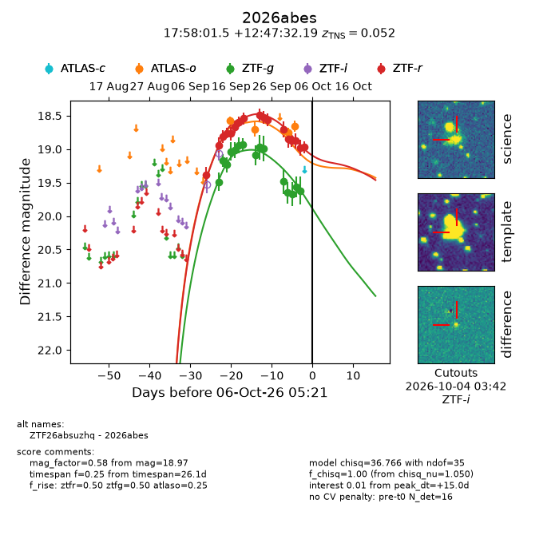
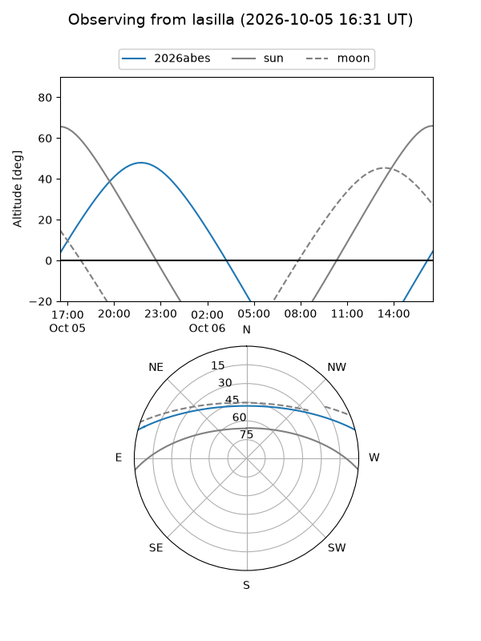
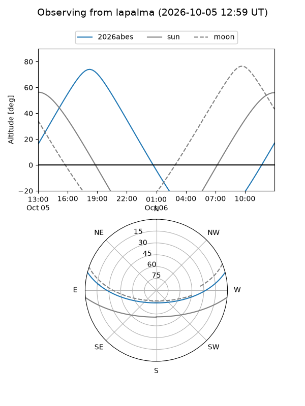
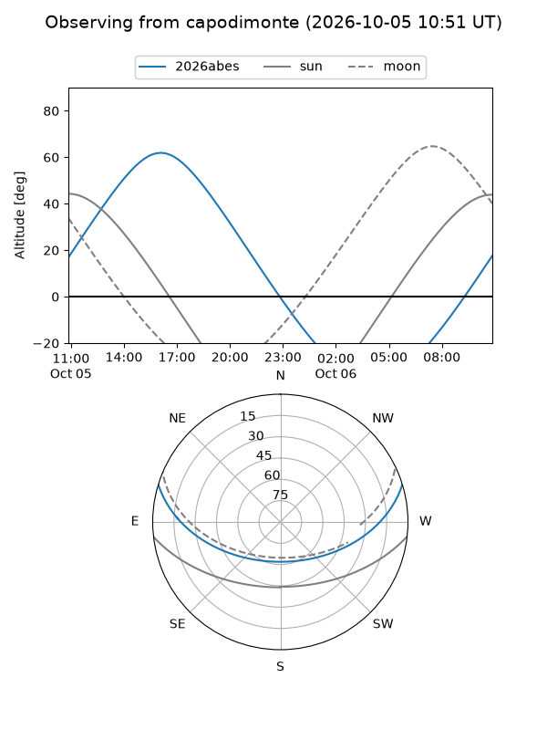
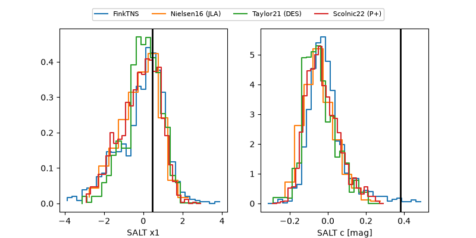

2026abes
Target 2026abes at 2026-10-06 05:23
Aliases and brokers:
FINK-ZTF: ztf.fink-portal.org/ZTF26absuzhq
Lasair-ZTF: lasair-ztf.lsst.ac.uk/objects/ZTF26absuzhq
ALeRCE-ZTF: alerce.online/object/ZTF26absuzhq
YSE-PZ: ziggy.ucolick.org/yse/transient_detail/2026abes
TNS name: wis-tns.org/object/2026abes
Direct TNS query: direct search
alt names
ZTF26absuzhq (ztf,fink_ztf)
2026abes (tns,yse)
Coordinates:
equatorial (ra, dec) = 269.5062,+12.79227
equatorial (HMS+DMS) = 17:58:01.49,+12:47:32.19
galactic (l, b) = (38.6114,+17.54215)
Flags:
TNS type: SN Ia
TNS redshift: 0.0520
peak dt: +15.0
Photometry:
last atlaso=18.66, ztfg=19.62, ztfr=18.97
5 atlaso, 15 ztfg, 17 ztfr detections
Lightcurve

Visibility



Additional plots
